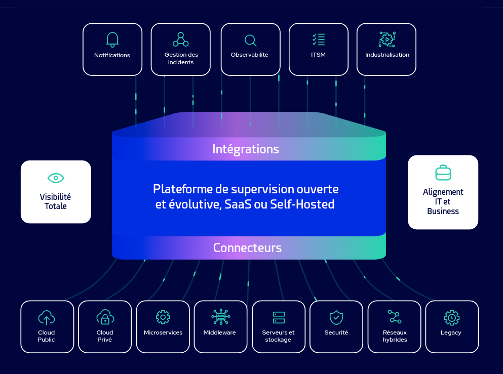

Centreon

Mon projet sur le Superviseur Centreon
C'est quoi Centreon ?
Pourquoi avoir choisi Centreon ?
Centreon a été choisi en raison de sa robustesse, de sa simplicité d'utilisation et de sa polyvalence. Avec ses fonctionnalités avancées de supervision des infrastructures informatiques, il offre une solution complète et évolutive pour la surveillance en temps réel des systèmes, réseaux et applications. Sa capacité à s'adapter aux besoins spécifiques de l'entreprise et son interface conviviale en font un choix idéal pour garantir la disponibilité et les performances des services informatiques essentiels.
Ma contribution sur la supervision de mon entreprise avec Centreon
Sur Centreon, j'ai réalisé la mise en place et l'évolution continue de notre système de supervision. Tout d'abord, j'ai orchestré la configuration initiale du serveur Centreon, mettant en place les fondations nécessaires à une surveillance efficace de notre infrastructure informatique. Cela a impliqué la configuration minutieuse des sondes et des hôtes, ainsi que la définition des seuils de notification et des alertes. En parallèle, j'ai déployé et configuré des agents Centreon sur une gamme variée d'équipements réseau, notamment des commutateurs, des routeurs et des points d'accès, un onduleur, etc... Cette étape cruciale nous a permis de surveiller en temps réel l'état et les performances de notre réseau, identifiant rapidement les éventuels problèmes de connectivité, de bande passante ou de latence. Une autre dimension importante de mon travail sur Centreon a été l'extension de notre système de supervision pour inclure la surveillance des machines virtuelles. En surveillant de près les performances et les ressources des VM, nous avons pu détecter rapidement tout dysfonctionnement ou goulot d'étranglement dans notre infrastructure virtuelle, garantissant ainsi une expérience utilisateur fluide et sans interruption. Parallèlement à la surveillance des équipements et des VM, j'ai également développé des scripts personnalisés pour répondre à des besoins spécifiques de supervision. Ces scripts sur mesure ont permis de monitorer des aspects critiques et spécifiques de nos applications et services, renforçant ainsi notre capacité à anticiper et à résoudre les problèmes potentiels avant qu'ils n'affectent nos utilisateurs finaux. Dans l'ensemble, ma contribution à Centreon a été un pilier essentiel de notre stratégie de surveillance, garantissant la sécurité, la stabilité et la performance de notre environnement informatique dans son ensemble. et la satisfaction de nos parties prenantes.